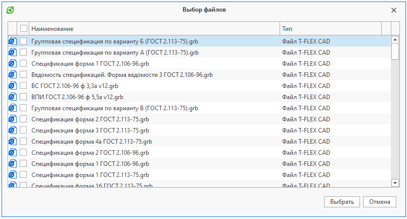

Выбор объектов справочника |
СоздатьДиалогВыбораОбъектов("Имя или Guid справочника") - Создает диалог выбора объектов по наименованию или Guid'у справочника. Возвращает созданный диалог выбора объектов
C#
using TFlex.DOCs.Model.Macros; using TFlex.DOCs.Model.Macros.ObjectModel; public class Macro : MacroProvider { public Macro(MacroContext context) : base(context) { } public override void Run() { ДиалогВыбораОбъектов диалог = СоздатьДиалогВыбораОбъектов("Файлы"); диалог.Заголовок = "Выбор файлов"; // Устанавливаем заголовок окна диалог.Вид = "Список"; // Устанавливаем вид, с которым открывается справочник диалог.Каталог = "Картотека по годам"; // Устанавливаем каталог, с которым открывается справочник диалог.ПапкаКаталога = "2018"; // Устанавливаем папку каталога, с которой открывается справочник диалог.МножественныйВыбор = true; // Устанавливаем возможность множественного выбора объектов в окне диалога диалог.Фильтр = "[Тип] Порождён от 'Документ системы T-FLEX CAD'"; // Устанавливаем фильтр, с которым открывается справочник диалог.ВыборФлажками = true; // Устанавливаем возможность выбора объектов при помощи флажков. Выбор флажками возможен только в случае, когда МножественныйВыбор = true диалог.ПоказатьПанельКнопок = false; // Скрываем панель кнопок диалог.АвтоВыборФлажками = true; // Устанавливаем возможность автоматической простановки флажков при выборе объектов. Автовыбор флажками возможен только в случае, когда ВыборФлажками = true и МножественныйВыбор = true // Задаем объекты, которые будут выбраны в диалоге по умолчанию. Для установки выбранных объектов необходимо задать МножественныйВыбор = true диалог.ВыбранныеОбъекты = НайтиОбъекты("Файлы", "[ID] Входит в список '10, 11'"); // Показываем диалоговое окно. Если диалог закрыт кнопкой "Ок", метод возвращает true; в противном случае - false if (диалог.Показать()) { foreach (Объект выбранныйОбъект in диалог.ВыбранныеОбъекты) // Получаем выбранные в диалоге объекты { // Действие над выбранным объектом } // Для справочника со сложной иерархией можно получить выбранные подключения foreach (Подключение выбранноеПодключение in диалог.ВыбранныеПодключения) { // Действие над выбранным подключением Объект дочернийОбъект = выбранноеПодключение.ДочернийОбъект; } } } }
Результат:
